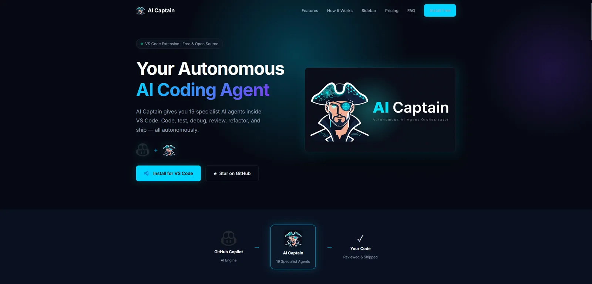

AI Captain
Dein intelligenter Coding-Copilot: VS Code Extension mit Multi-Model-Support, autonomer Code-Generierung, Review-Automatisierung und integrierter Web-Recherche.

KI-gestützte Softwareentwicklung
AI Captain ist eine VS Code Extension, die die Softwareentwicklung mit KI-Automatisierung auf ein neues Level hebt. Mit Slash-Commands wie /code, /review, /research und /plan wird der gesamte Entwicklungs-Workflow beschleunigt.
Das Multi-Model-System unterstützt GPT-4o, Claude und Perplexity — je nach Aufgabe wird automatisch das beste Modell gewählt. Vollständig konfigurierbar und erweiterbar.
Was AI Captain kann
/code
Autonome Code-Generierung — beschreibe was du brauchst, AI Captain schreibt den Code.
/review
Automatisches Code-Review mit Verbesserungsvorschlägen und Best Practices.
/research
Integrierte Web-Recherche via Perplexity API — aktuelle Informationen direkt in VS Code.
/plan
Strukturierte Implementierungspläne mit Abhängigkeiten und Risiko-Analyse.
Multi-Model
GPT-4o, Claude und Perplexity — automatische Modellwahl je nach Aufgabe.
Konfigurierbar
Vollständig anpassbar — eigene Prompts, Modell-Einstellungen und Workflow-Regeln.
Technologien
Interesse an AI-gestützter Entwicklung?
Entdecken Sie AI Captain auf GitHub — oder lassen Sie sich eine maßgeschneiderte AI-Lösung entwickeln.